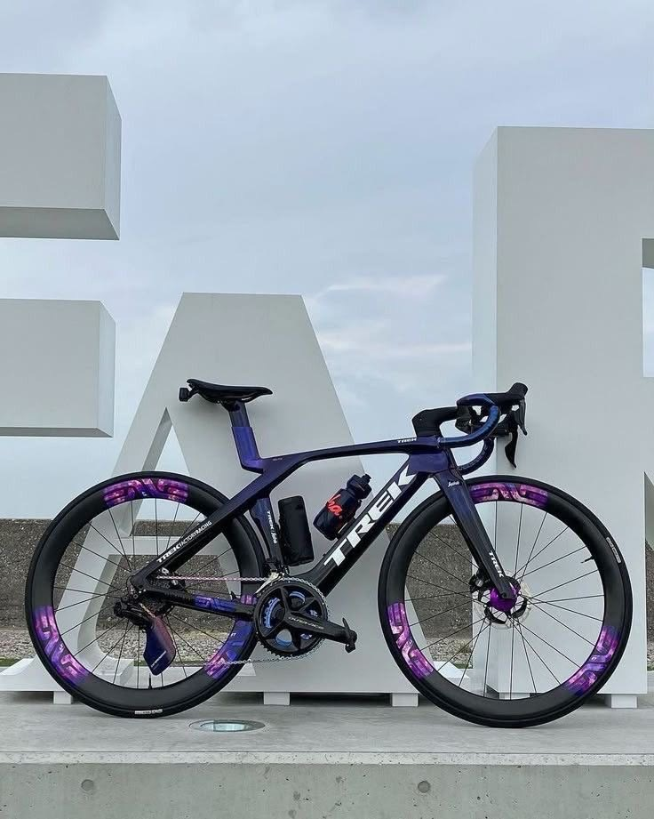

Le vélo prêt à partir
Une belle machine pour profiter de chaque sortie.
Bienvenue
Une sélection de vélos de route et de course. Parcourez les photos et découvrez la passion du cyclisme.
Une belle machine pour profiter de chaque sortie.

Un vélo haut en couleur, prêt pour les routes des sommets.

Des détails violets qui donnent du caractère à cette monture.

Une machine aérodynamique faite pour filer sur la route.

Des lignes rapides et un vélo prêt à se dépasser.

Un vélo de chrono dans un décor au bord de l’eau.
Visionnez directement la vidéo sélectionnée.
Des marques proposant des produits techniques et innovants adaptés aux cyclistes.
Équipements et accessoires pour accompagner les cyclistes sur la route.
Vêtements techniques pensés pour le confort et la performance à vélo.
Tenues et accessoires pour les sorties à vélo.
Équipements cyclistes alliant matières techniques et design contemporain.
Vêtements et accessoires de cyclisme pour chaque sortie.
Matériel et équipements conçus pour les cyclistes.
Un bon entretien vélo route améliore le pédalage, le freinage et la durée de vie des composants.
Le plus utile au quotidien : contrôler la pression, écouter les bruits inhabituels, garder une chaîne propre et lubrifiée.
La fréquence dépend de votre pratique, mais un contrôle avant chaque sortie et un nettoyage régulier évitent beaucoup d’usure.
Après la pluie, séchez rapidement le vélo et relubrifiez la chaîne si nécessaire.
Freins à patins ou à disque, la logique reste la même, mais les points de vigilance changent.
Certaines opérations méritent un passage en atelier expert, surtout pour les roulements, la purge hydraulique ou un réglage complexe.
Personne n’a envie de s’atteler à récurer son vélo après une sortie, surtout si celle-ci était froide, humide ou boueuse, mais le fait de nettoyer contribuera grandement à préserver votre vélo. Même si la sortie était sèche et poussiéreuse, un lavage de vélo devrait faire partie de votre routine à peu près toutes les deux semaines.
Voilà ce dont vous aurez besoin pour nettoyer efficacement votre vélo de route :
Le vélo de route traverse une mutation industrielle profonde.
Points clés abordés :